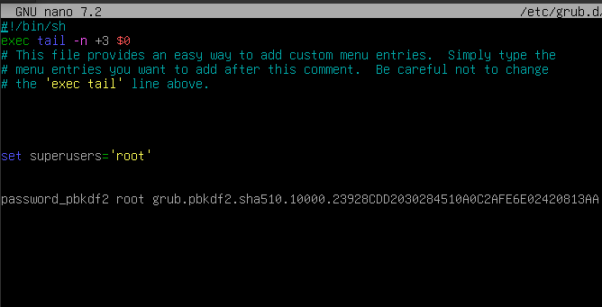

Para realizar este manual de bastionado del arranque de la máquina Debian, he usado una máquina virtual con los requisitos mínimos necesarios para completar el proceso.
Graphical install para iniciar el instalador gráfico de Debian.Instalando el cargador de arranque GRUB.3. Bastionado de GRUB en la máquina Debian
Ocultar el menú de arranque es una medida de seguridad que ayuda a evitar que usuarios no autorizados puedan acceder a opciones avanzadas del sistema durante el inicio. Al ocultar el menú, se minimizan las oportunidades de manipulación del arranque y se incrementa la protección contra accesos no deseados.
Para poder ocultar el menú de arranque, debemos acceder al archivo /etc/default/grub, pero primero es necesario acceder como root con: su root.
Una vez que seamos superusuario, con el comando nano /etc/default/grub podemos entrar al archivo de configuración de GRUB.
Si nos fijamos en la segunda línea no comentada, el menú de arranque está configurado para mostrarse durante 5 segundos por defecto. Si cambiamos ese parámetro a cero, se oculta el menú de arranque.
Configurar una contraseña para modificar el arranque es esencial para evitar que usuarios no autorizados puedan cambiar la configuración del gestor de arranque y obtener acceso no deseado al sistema. Esta medida de seguridad añade una capa adicional de protección, garantizando que solo los usuarios con la contraseña adecuada puedan realizar modificaciones críticas en el arranque.
Mientras seguimos siendo superusuario, vamos a generar una contraseña con grub-mkpasswd-pbkdf2 y copiar el hash que se ha generado.
Una vez creada esta contraseña, accedemos al archivo /etc/grub.d/40_custom usando, por ejemplo, nano y añadimos estos dos parámetros:
set superusers="root"
password_pbkdf2 root grub.pbkdf2.sha512.10000.23829CDD2030284510A0C2AFE6E02420813AAF0CD59B08E986D7DA0F7A0E0BFC630CCAAE107ED5D289A51439305AD534BFD0DC34BD0ABC22635DC73F30E122BD514D06ABCEA974E5C55FE359AF18DC61092A7A9630442CEDE219ABF504888021362F3B6D029F4FCDF5D4415BF1BAF0EDAC9ED9F5FE393AB8419029D1
El password sustituyelo por la contraseña generada.

Hacer una copia de seguridad de la configuración del arranque es fundamental para protegerse contra posibles errores de configuración o fallos en el sistema que podrían dejar el equipo inoperativo. Con una copia de seguridad, es posible restaurar rápidamente la configuración original y asegurar que el sistema pueda volver a funcionar correctamente sin pérdida de información crítica.
Para poder realizarla vamos a seguir estos comandos :